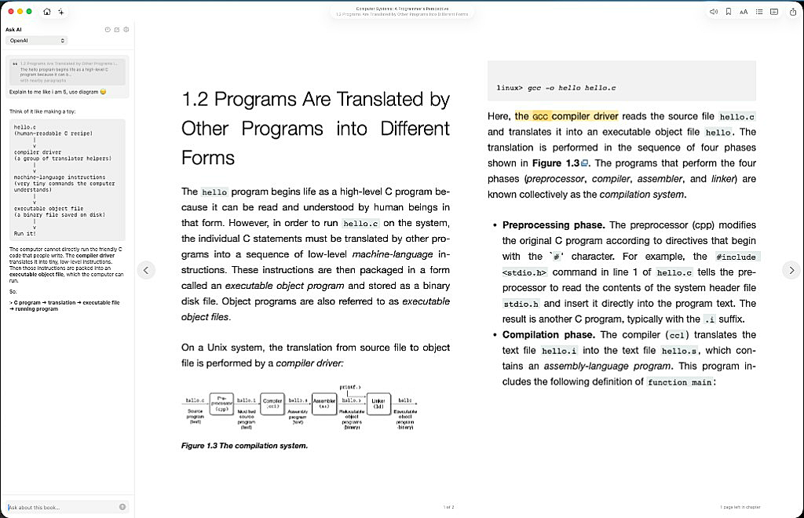
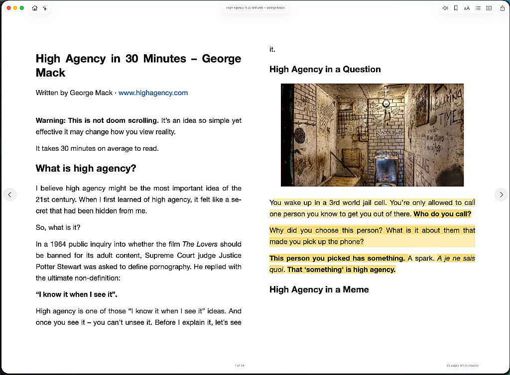
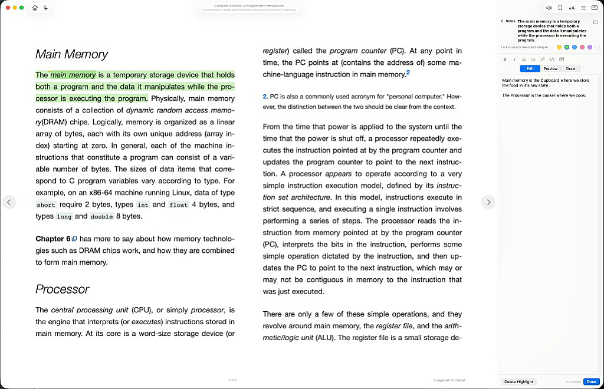
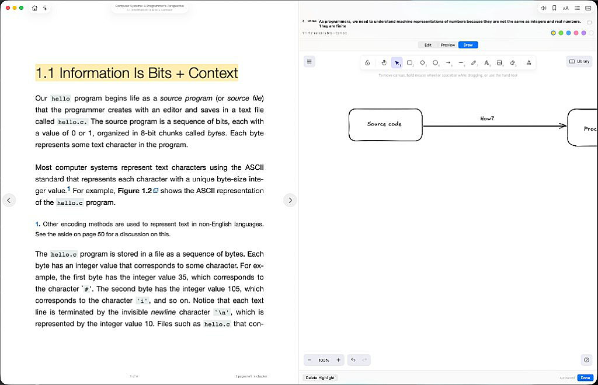
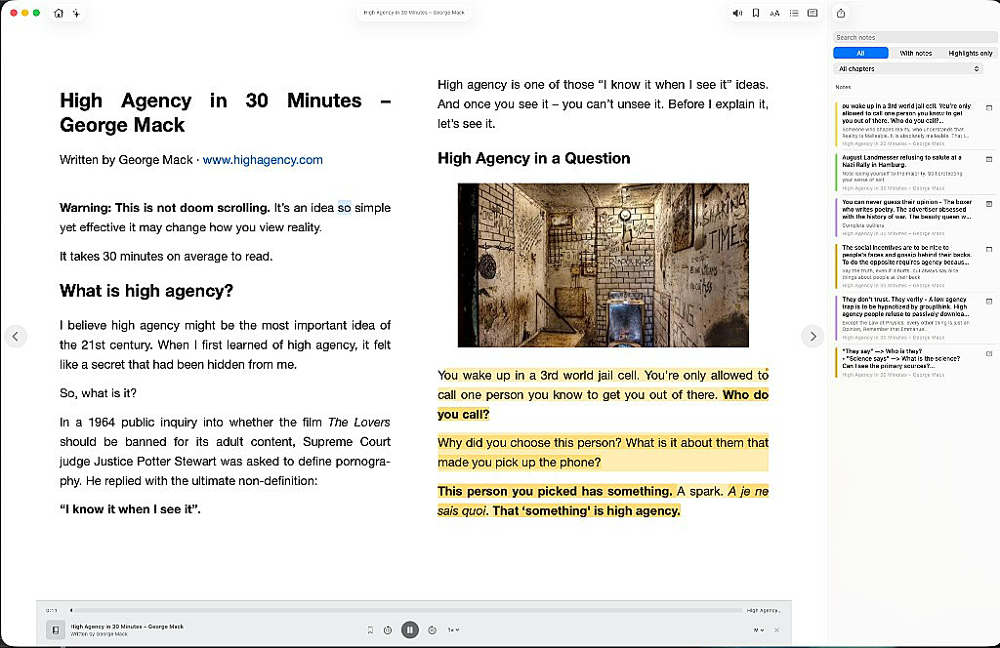

Ask AI
Opt-in chat about the book, with the passage you are reading as context.

A lightweight native EPUB reader for macOS. Without the store, the sync, or the library management.

Opt-in chat about the book, with the passage you are reading as context.

Highlights in multiple colors, each with a note stored alongside the book.

Freeform sketches on a highlight, offline, in the app.

On-device read-aloud. No cloud TTS.

Paginated pages, typography and theme controls, progress that survives layout changes.